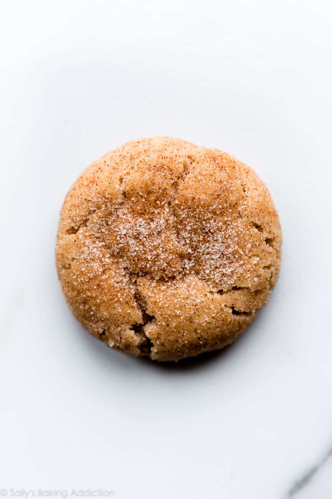

Snickerdoodle Cookie Recipe

Description
Another classic cookie recipe that the family loves. A nice soft and puffy snickerdoodle makes a great winter treat.
Source
Ingredients
Dough
- Flour - 3 cups
- Cream of tartar - 2 teaspoons
- Baking soda - 1 teaspoon
- Cinnamon - 1 1/2 teaspoon
- Salt 1/2 teaspoon
- Butter - 1 cup
- Sugar - 1 1/3 cup
- Egg - 1 large + 1 yolk
- Vanilla extract - 2 teaspoons
Topping
- Sugar - 1/3 cup
- Cinnamon - 1 teaspoon
Directions
- Preheat oven to 375 degrees F
- Line cookie sheets with parchment paper
- Make the topping by combining the sugar and cinnamon in a small bowl
- Whisk the flour, cream of tartar, baking soda, cinnamon, and salt together in a medium bowl.
- In a large bowl using a hand mixer or stand mixer fitted with a paddle attachment, beat the butter and granulated sugar together on high speed until smooth and creamy, about 2 minutes. Add the egg, egg yolk, and vanilla extract. Beat on medium-high speed until combined. Scrape down the sides and up the bottom of the bowl with a rubber spatula as needed. With the mixer running on low speed, slowly add the dry ingredients to the wet ingredients in 3 different parts. The dough will be thick.
- Roll cookie dough into balls, about 1.5 Tablespoons of cookie dough each. I recommend this cookie scoop. Roll the dough balls in cinnamon-sugar topping. Sprinkle extra cinnamon-sugar on top if desired. Arrange 3 inches apart on the baking sheets.
- Bake cookies for 10 minutes. The cookies will be very puffy and soft. When they are still very warm, lightly press down on them with the back of a spoon or fork to help flatten them out. Allow cookies to cool on the baking sheet for 10 minutes and transfer to a wire rack to cool completely.
Home